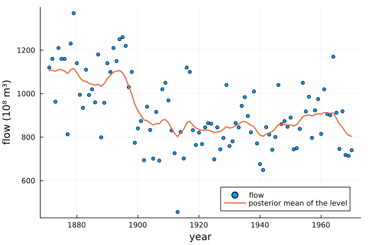

Local level model
This example estimates the marginal likelihood of the local level model for the annual flow of the Nile river. The levels are latent variables, drawn jointly by forward filtering and backward sampling, and integrated out of the likelihood by the Kalman filter. The model has only two parameters, so the example ends with a check of the estimate by numerical integration.
using MargLikeGibbsOutput, Distributions, Random, Statistics, PlotsData
The annual flow of the Nile at Aswan from 1871 to 1970, in $10^8$ m$^3$, as in the Nile dataset in R and in Durbin and Koopman (2012), Time Series Analysis by State Space Methods.
y = [1120.0, 1160, 963, 1210, 1160, 1160, 813, 1230, 1370, 1140, 995, 935, 1110, 994, 1020,
960, 1180, 799, 958, 1140, 1100, 1210, 1150, 1250, 1260, 1220, 1030, 1100, 774, 840, 874,
694, 940, 833, 701, 916, 692, 1020, 1050, 969, 831, 726, 456, 824, 702, 1120, 1100, 832,
764, 821, 768, 845, 864, 862, 698, 845, 744, 796, 1040, 759, 781, 865, 845, 944, 984, 897,
822, 1010, 771, 676, 649, 846, 812, 742, 801, 1040, 860, 874, 848, 890, 744, 749, 838,
1050, 918, 986, 797, 923, 975, 815, 1020, 906, 901, 1170, 912, 746, 919, 718, 714, 740]
years = 1871:1970Model
The local level model is
\[\begin{aligned} y_t &= \mu_t + \varepsilon_t, & \varepsilon_t &\sim N(0, \sigma_\varepsilon^2), \\ \mu_{t+1} &= \mu_t + \eta_t, & \eta_t &\sim N(0, \sigma_\eta^2), \end{aligned}\]
for $t = 1, \dots, n$, with initial level $\mu_1 \sim N(a_1, P_1)$. The priors on the variances are
\[\sigma_\varepsilon^2 \sim \text{Inv-}\chi^2(\nu_\varepsilon, \tau_\varepsilon^2), \qquad \sigma_\eta^2 \sim \text{Inv-}\chi^2(\nu_\eta, \tau_\eta^2),\]
centred on a standard deviation of about 100 for the observation noise and 30 for the annual change in the level. The marginal likelihood needs a proper prior for the initial level, here $\mu_1 \sim N(1000, 500^2)$, and it depends on that choice.
prior = (νε = 3.0, τ²ε = 100.0^2, νη = 3.0, τ²η = 30.0^2, a₁ = 1000.0, P₁ = 500.0^2)
InvChisq(ν, τ²) = InverseGamma(ν / 2, ν * τ² / 2)Kalman filter
The likelihood with the levels integrated out is the product of the one-step-ahead prediction densities $N(y_t \mid a_t, F_t)$ from the Kalman filter, where $a_t$ and $P_t$ are the mean and variance of $\mu_t$ given $y_1, \dots, y_{t-1}$ and $F_t = P_t + \sigma_\varepsilon^2$. With the Kalman gain $K_t = P_t / F_t$, the filter updates
\[m_t = a_t + K_t (y_t - a_t), \qquad C_t = P_t (1 - K_t), \qquad a_{t+1} = m_t, \qquad P_{t+1} = C_t + \sigma_\eta^2,\]
where $m_t$ and $C_t$ are the mean and variance of $\mu_t$ given $y_1, \dots, y_t$.
function kalmanfilter(θ, y, prior)
m, C = similar(y), similar(y)
a, P, loglik = prior.a₁, prior.P₁, 0.0
for t in eachindex(y)
F = P + θ.σ²ε
loglik += logpdf(Normal(a, sqrt(F)), y[t])
K = P / F
m[t], C[t] = a + K * (y[t] - a), P * (1 - K)
a, P = m[t], C[t] + θ.σ²η
end
return m, C, loglik
endGibbs sampler
Latent levels
The levels are drawn jointly from $p(\mu_1, \dots, \mu_n \mid y, \sigma_\varepsilon^2, \sigma_\eta^2)$ by forward filtering and backward sampling (Carter and Kohn, 1994; Frühwirth-Schnatter, 1994): first $\mu_n \sim N(m_n, C_n)$, and then backwards in time
\[\mu_t \mid \mu_{t+1}, y_1, \dots, y_t \sim N\big(m_t + J_t (\mu_{t+1} - m_t),\, C_t (1 - J_t)\big), \qquad J_t = \frac{C_t}{C_t + \sigma_\eta^2}.\]
The full conditional of a latent variable only needs a rand method:
struct LevelsPosterior
m::Vector{Float64}
C::Vector{Float64}
σ²η::Float64
end
function Base.rand(rng::AbstractRNG, d::LevelsPosterior)
(; m, C, σ²η) = d
μ = similar(m)
μ[end] = rand(rng, Normal(m[end], sqrt(C[end])))
for t in length(m)-1:-1:1
J = C[t] / (C[t] + σ²η)
μ[t] = rand(rng, Normal(m[t] + J * (μ[t+1] - m[t]), sqrt(C[t] * (1 - J))))
end
return μ
end
function μ_conditional(state, y, prior)
m, C, _ = kalmanfilter(state, y, prior)
return LevelsPosterior(m, C, state.σ²η)
endParameter blocks
Given the levels, the two variances have the conjugate full conditionals
\[\begin{aligned} \sigma_\varepsilon^2 \mid \mu, y &\sim \text{Inv-}\chi^2\Big(\nu_\varepsilon + n, \frac{\nu_\varepsilon \tau_\varepsilon^2 + \sum_{t=1}^n (y_t - \mu_t)^2}{\nu_\varepsilon + n}\Big), \\ \sigma_\eta^2 \mid \mu &\sim \text{Inv-}\chi^2\Big(\nu_\eta + n - 1, \frac{\nu_\eta \tau_\eta^2 + \sum_{t=1}^{n-1} (\mu_{t+1} - \mu_t)^2}{\nu_\eta + n - 1}\Big). \end{aligned}\]
function σ²ε_conditional(state, y, prior)
νₙ = prior.νε + length(y)
return InvChisq(νₙ, (prior.νε * prior.τ²ε + sum(abs2, y - state.μ)) / νₙ)
end
function σ²η_conditional(state, y, prior)
νₙ = prior.νη + length(y) - 1
return InvChisq(νₙ, (prior.νη * prior.τ²η + sum(abs2, diff(state.μ))) / νₙ)
end
logprior(θ, prior) = logpdf(InvChisq(prior.νε, prior.τ²ε), θ.σ²ε) + logpdf(InvChisq(prior.νη, prior.τ²η), θ.σ²η)
locallevel = GibbsModel(
conditionals = (σ²ε = σ²ε_conditional, σ²η = σ²η_conditional),
latents = (μ = μ_conditional,),
loglik = (θ, y) -> last(kalmanfilter(θ, y, prior)),
logprior = logprior,
)Posterior
rng = Xoshiro(1871)
init = (σ²ε = 10_000.0, σ²η = 1_000.0)
draws = gibbs(rng, locallevel, y, prior, init; ndraws = 10_000, burnin = 1_000)
for block in (:σ²ε, :σ²η)
x = [draw[block] for draw in draws]
println(rpad(block, 5), "mean = ", round(mean(x); digits = 0), " std = ", round(std(x); digits = 0))
endσ²ε mean = 15537.0 std = 2805.0
σ²η mean = 1413.0 std = 925.0The posterior means are close to the maximum likelihood estimates 15099 and 1469 in Durbin and Koopman. The sampler for the parameter blocks of the model only returns the parameters, but the lower-level method of gibbs can return any function of the full state, here the levels:
levels = gibbs(state -> state.μ, rng, merge(locallevel.latents, locallevel.conditionals),
y, prior, init; ndraws = 10_000, burnin = 1_000)
scatter(years, y; label = "flow", markersize = 3, xlabel = "year", ylabel = "flow (10⁸ m³)")
plot!(years, mean(levels); label = "posterior mean of the level", linewidth = 2)
Marginal likelihood
With the blocks in the order $\sigma_\varepsilon^2$, $\sigma_\eta^2$, the posterior ordinate is
\[\pi(\theta^* \mid y) = \pi(\sigma_\varepsilon^{2*} \mid y)\, \pi(\sigma_\eta^{2*} \mid y, \sigma_\varepsilon^{2*}).\]
The first factor averages the full conditional of $\sigma_\varepsilon^2$ over the draws of the levels from the full sampler. The second averages the full conditional of $\sigma_\eta^2$ over a reduced run that holds $\sigma_\varepsilon^2$ fixed and still samples the levels. The likelihood $f(y \mid \theta^*)$ is the Kalman filter likelihood.
estimate = chib(rng, locallevel, y, prior, init; ndraws = 10_000, burnin = 1_000)ChibEstimate(log marginal likelihood = -641.86, NSE = 0.032)The log ordinates of the two blocks are
estimate.logordinates(σ²ε = -8.862181105050643, σ²η = -7.797022901899033)Check by numerical integration
The marginal likelihood is a two-dimensional integral of the Kalman filter likelihood times the prior,
\[m(y) = \int\!\!\int f(y \mid \sigma_\varepsilon^2, \sigma_\eta^2)\, p(\sigma_\varepsilon^2)\, p(\sigma_\eta^2)\, d\sigma_\varepsilon^2\, d\sigma_\eta^2,\]
computed here by the trapezoidal rule on a grid for $(\ln \sigma_\varepsilon^2, \ln \sigma_\eta^2)$ that covers the posterior with a wide margin.
uε, uη = range(6, 12; length = 401), range(0, 12; length = 401)
logintegrand = [last(kalmanfilter((σ²ε = exp(a), σ²η = exp(b)), y, prior)) +
logprior((σ²ε = exp(a), σ²η = exp(b)), prior) + a + b for a in uε, b in uη]
weights = [(i in (1, length(uε)) ? 0.5 : 1.0) * (j in (1, length(uη)) ? 0.5 : 1.0)
for i in eachindex(uε), j in eachindex(uη)]
integrand = exp.(logintegrand .- maximum(logintegrand))
exact = log(step(uε) * step(uη) * sum(weights .* integrand)) + maximum(logintegrand)-641.9068707396456The estimate is within a few numerical standard errors of the exact value:
(estimate = estimate.logmarglik, exact = exact, nse = estimate.nse)(estimate = -641.8601320131764, exact = -641.9068707396456, nse = 0.0321347329421777)